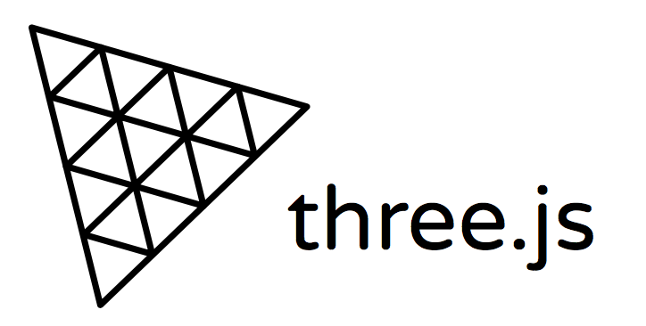
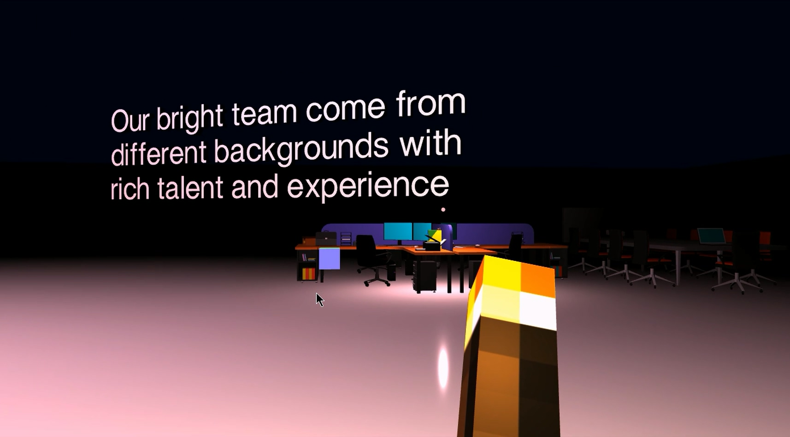
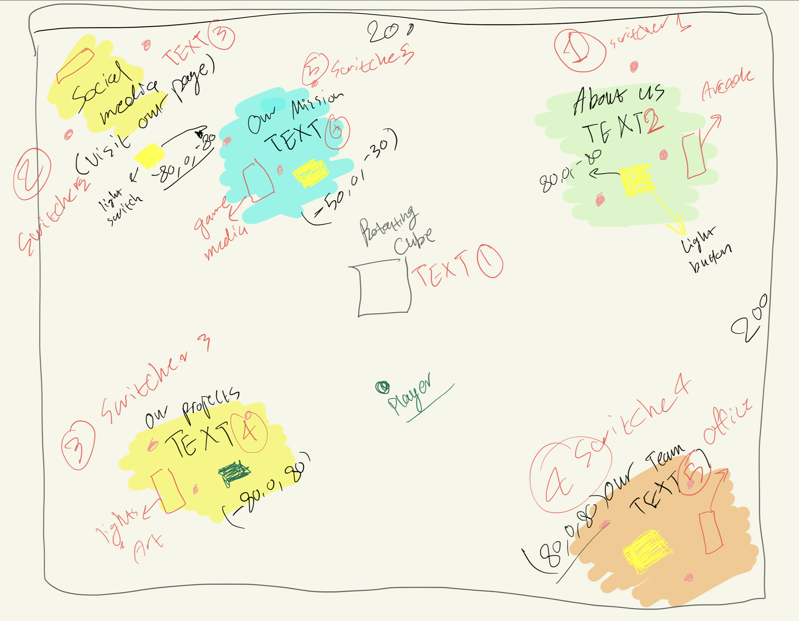
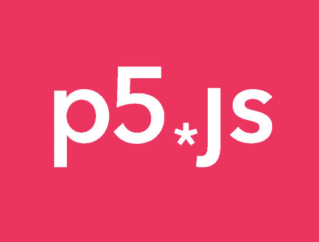

DREAM LIGHT - THREEJS

A web interactive piece using Three.js, incorporating both 3D visual elements and audio features. This project was created for a creative coding module during my second year at university. The objective was to enhance the visibility of a fictional company specialising in immersive exhibitions and interactive installations. The target audience comprises youthful individuals and those interested in artistic and creative technologies. To achieve this, I developed a prototype of a mini-game/digital interactive exhibition enabling users to explore an immersive environment while learning about the company's profile. The entire project was coded using JavaScript, leveraging Three.js and Tone.js frameworks.
The project serves as a mini first-person shooter game where the aim is to explore the area and find all the hidden sections in the dark. Since the company focuses on interactive installations, the game is set in a dark environment and the player has to find the light switches scattered around. Once the lights are turned on, more of the scene can be viewed, such as text containing information about the company and some 3D models that represent related themes to the company. The player is holding a torch that allows them to light the area in front of them to help with navigation. The player can also shoot “light balls” that emit light further in the scene to give hints of the sections' location. There are poles scattered randomly to fill in the space of this prototype and to help with navigation. The game itself mimics some of the events that the company has produced. But Since this is a prototype, the models and sound used are only to give an idea of how everything will work.
Game Map Sketch


P5.js Paintings
Art pieces created using p5.js library and some creativity!
One of my modules in my first year at university was Creative Coding. We were assigned to create
sketches and an interactive web piece using JavaScript and HTML through P5js Library.
After
researching the internet for inspiration and tutorials, I have generated four pieces each with its
own story and journey. You can view each live by clicking on their titles:

Audio Visualiser - P5js
The second project was an audio visualiser also created using p5js library and a little more creativity :)